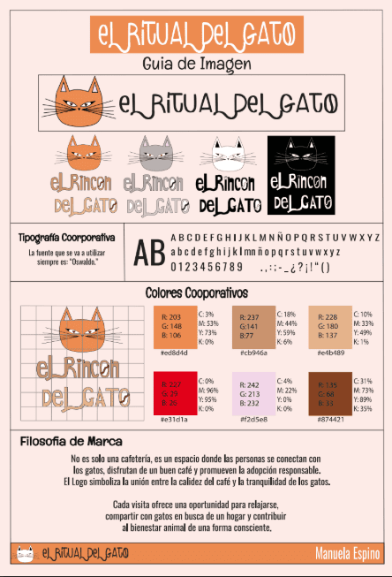
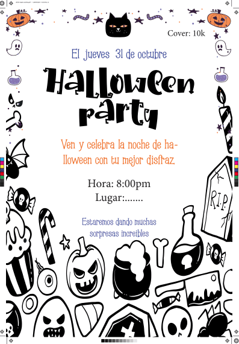
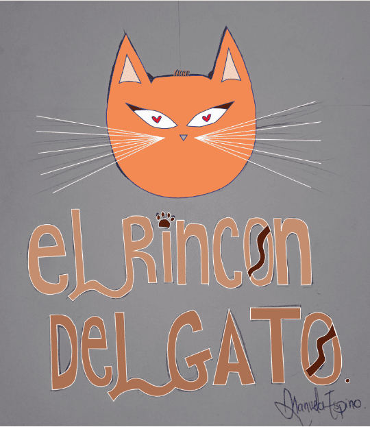
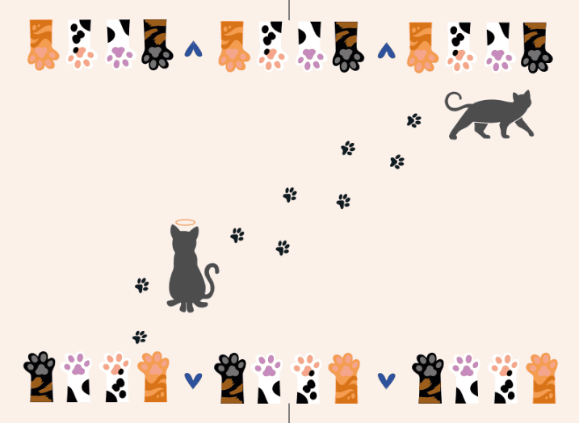
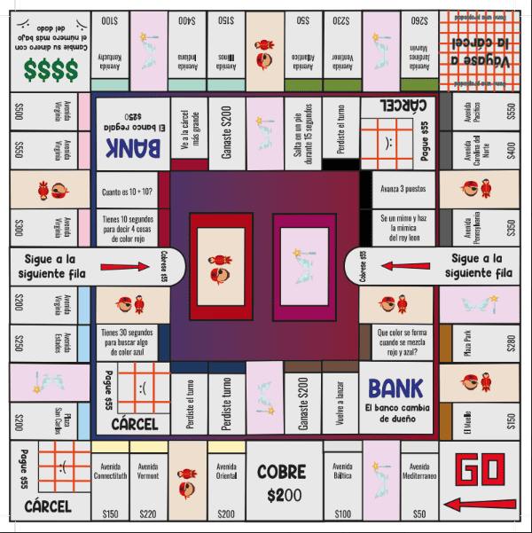
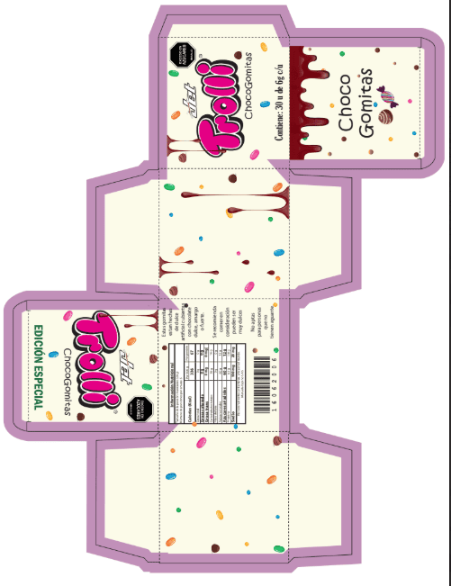
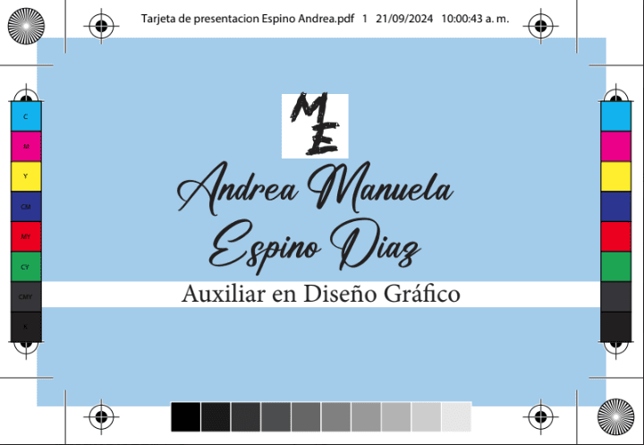

Diseño Editorial
El diseño editorial ha sido mucho más que diagramar páginas o elegir tipografías. Desde mi experiencia en la Fundación, he aprendido a ver el diseño como una herramienta de escucha, de denuncia y de transformación. He participado en la creación de informes, boletines, piezas educativas y publicaciones institucionales que narran historias de lucha y esperanza. Cada proyecto me ha enseñado a mirar más allá de lo estético: a pensar en quién va a leerlo, cómo se va a sentir y qué mensaje quiero que le quede. A través del diseño he entendido que comunicar con empatía también es una forma de cuidar.
1
 9
10
9
10

2
Guia de imagen "El rincon del gato"

3
Invitación halloween

4
Dibujo y vectorizado logo

5
Contraportada cuaderno personal

6
Monopoly para niños

7
8
Caja de dulces edición especial

Portada cuaderno gatos personal

